Matplotlib#
Download exercises zip#
Introduction#
We will review the famous library Matplotlib which allows to display a variety of charts, and it is the base of many other visualization libraries.
What to do#
unzip exercises in a folder, you should get something like this:
visualization
visualization1.ipynb
visualization1-sol.ipynb
visualization3-chal.ipynb
visualization2.ipynb
visualization2-sol.ipynb
jupman.py
WARNING: to correctly visualize the notebook, it MUST be in an unzipped folder !
open Jupyter Notebook from that folder. Two things should open, first a console and then browser. The browser should show a file list: navigate the list and open the notebook
visualization/visualization1.ipynb
WARNING 2: DO NOT use the Upload button in Jupyter, instead navigate in Jupyter browser to the unzipped folder !
Go on reading that notebook, and follow instuctions inside.
Shortcut keys:
to execute Python code inside a Jupyter cell, press
Control + Enterto execute Python code inside a Jupyter cell AND select next cell, press
Shift + Enterto execute Python code inside a Jupyter cell AND a create a new cell aftwerwards, press
Alt + EnterIf the notebooks look stuck, try to select
Kernel -> Restart
First example#
Let’s start with a very simple plot:
[2]:
# this is *not* a python command, it is a Jupyter-specific magic command,
# to tell jupyter we want the graphs displayed in the cell outputs
%matplotlib inline
# imports matplotlib
import matplotlib.pyplot as plt
# we can give coordinates as simple numberlists
# this are couples for the function y = 2 * x
xs = [1, 2, 3, 4, 5, 6]
ys = [2, 4, 6, 8,10,12]
plt.plot(xs, ys)
# we can add this after plot call, it doesn't matter
plt.title("my function")
plt.xlabel('x')
plt.ylabel('y')
# prevents showing '<matplotlib.text.Text at 0x7fbcf3c4ff28>' in Jupyter
plt.show()
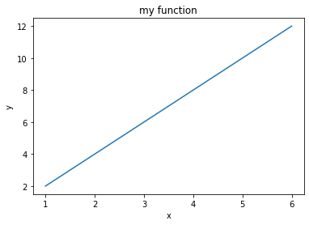
Plot style#
To change the way the line is displayed, you can set dot styles with another string parameter. For example, to display red dots, you would add the string ro, where r stands for red and o stands for dot.
[3]:
%matplotlib inline
import matplotlib.pyplot as plt
xs = [1, 2, 3, 4, 5, 6]
ys = [2, 4, 6, 8,10,12]
plt.plot(xs, ys, 'ro') # NOW USING RED DOTS
plt.title("my function")
plt.xlabel('x')
plt.ylabel('y')
plt.show()
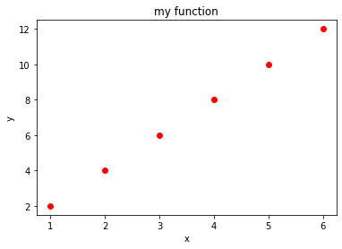
x power 2 exercise#
Try to display the function y = x**2 (x power 2) using green dots and for integer xs going from -10 to 10
[ ]:
# write here
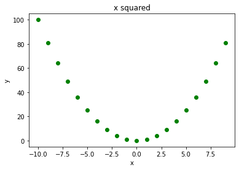
Show solution
[ ]:
%matplotlib inline
import matplotlib.pyplot as plt
xs = range(-10, 10)
ys = [x**2 for x in xs ]
plt.plot(xs, ys, 'go')
plt.title("x squared")
plt.xlabel('x')
plt.ylabel('y')
plt.show()
Axis limits#
If you want to change the x axis, you can use plt.xlim:
[6]:
%matplotlib inline
import matplotlib.pyplot as plt
xs = [1, 2, 3, 4, 5, 6]
ys = [2, 4, 6, 8,10,12]
plt.plot(xs, ys, 'ro')
plt.title("my function")
plt.xlabel('x')
plt.ylabel('y')
plt.xlim(-5, 10) # SETS LOWER X DISPLAY TO -5 AND UPPER TO 10
plt.ylim(-7, 26) # SETS LOWER Y DISPLAY TO -7 AND UPPER TO 26
plt.show()
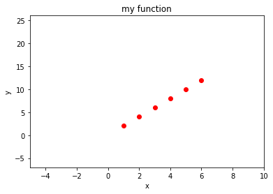
Axis size#
[7]:
%matplotlib inline
import matplotlib.pyplot as plt
xs = [1, 2, 3, 4, 5, 6]
ys = [2, 4, 6, 8,10,12]
fig = plt.figure(figsize=(10,3)) # width: 10 inches, height 3 inches
plt.plot(xs, ys, 'ro')
plt.title("my function")
plt.xlabel('x')
plt.ylabel('y')
plt.show()
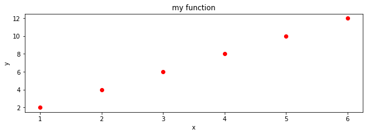
Changing tick labels#
You can also change labels displayed on ticks on axis with plt.xticks and plt.yticks functions:
Note: instead of xticks you might directly use categorical variables IF you have matplotlib >= 2.1.0
Here we use xticks as sometimes you might need to fiddle with them anyway
[8]:
%matplotlib inline
import matplotlib.pyplot as plt
xs = [1, 2, 3, 4, 5, 6]
ys = [2, 4, 6, 8,10,12]
plt.plot(xs, ys, 'ro')
plt.title("my function")
plt.xlabel('x')
plt.ylabel('y')
# FIRST NEEDS A SEQUENCE WITH THE POSITIONS, THEN A SEQUENCE OF SAME LENGTH WITH LABELS
plt.xticks(xs, ['a', 'b', 'c', 'd', 'e', 'f'])
plt.show()
Multiple lines#
To overlay multiple lines, you just need to perform several calls to plt.plot. Matplotlib will automatically use a different color for each line.
REMEMBER: you should call plt.show only ONCE at the very end!!
[9]:
%matplotlib inline
import matplotlib.pyplot as plt
# we can give coordinates as simple numberlists
# this are couples for the function y = 2 * x
xsa = [1, 2, 3, 4, 5, 6]
ysa = [2, 4, 6, 8,10,12]
plt.plot(xsa, ysa)
xsb = [1.5, 3.0, 4.5] # note this other series can have a different number of points at different places
ysb = [9 , 2, 8]
plt.plot(xsb, ysb)
plt.show()
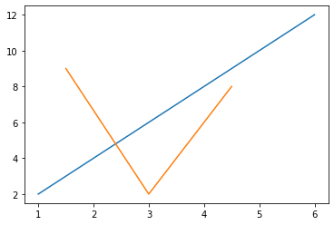
Numpy#
For functions involving reals, vanilla python starts showing its limits and its better to switch to numpy library. Matplotlib can easily handle both vanilla python sequences like lists and numpy array. Let’s see an example without numpy and one with it.
Example without numpy#
If we only use vanilla Python (that is, Python without extra libraries like numpy), to display the function y = 2x + 1 we can come up with a solution like this
[10]:
%matplotlib inline
import matplotlib.pyplot as plt
xs = [x*0.1 for x in range(10)] # notice we can't do a range with float increments
# (and it would also introduce rounding errors)
ys = [(x * 2) + 1 for x in xs]
plt.plot(xs, ys, 'bo')
plt.title("y = 2x + 1 with vanilla python")
plt.xlabel('x')
plt.ylabel('y')
plt.show()
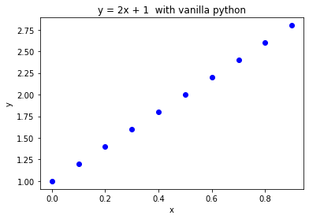
Example with numpy#
With numpy, we have at our disposal several new methods for dealing with arrays.
First we can generate an interval of values with one of these methods.
Sine Python range does not allow float increments, we can use np.arange:
[11]:
import numpy as np
xs = np.arange(0,1.0,0.1)
xs
[11]:
array([0. , 0.1, 0.2, 0.3, 0.4, 0.5, 0.6, 0.7, 0.8, 0.9])
Equivalently, we could use np.linspace:
[12]:
xs = np.linspace(0,0.9,10)
xs
[12]:
array([0. , 0.1, 0.2, 0.3, 0.4, 0.5, 0.6, 0.7, 0.8, 0.9])
Numpy allows us to easily write functions on arrays in a natural manner. For example, to calculate ys we can now do like this:
[13]:
ys = 2*xs + 1
ys
[13]:
array([1. , 1.2, 1.4, 1.6, 1.8, 2. , 2.2, 2.4, 2.6, 2.8])
Let’s put everything together:
[14]:
%matplotlib inline
import matplotlib.pyplot as plt
import numpy as np
xs = np.linspace(0,0.9,10) # left end: 0 *included* right end: 0.9 *included* number of values: 10
ys = 2*xs + 1
plt.plot(xs, ys, 'bo')
plt.title("y = 2x + 1 with numpy")
plt.xlabel('x')
plt.ylabel('y')
plt.show()
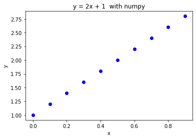
Exercise - sin(x) + 3#
✪✪✪ Try to display the function y = sin(x) + 3 for x at pi / 4 intervals, starting from 0. Use exactly 8 ticks.
NOTE: 8 is the number of x ticks (telecom people would use the term ‘samples’), NOT the x of the last tick !!
try to solve it without using numpy. For pi, use constant
math.pi(first you need to importmathmodule)try to solve it with numpy. For pi, use constant
np.pi(which is exactly the same asmath.pi)
b.1) solve it with np.arange
b.2) solve it with np.linspace
For each tick, use the label sequence
"0π/4", "1π/4" , "2π/4", "3π/4" , "4π/4", "5π/4", ..... Obviously writing them by hand is easy, try instead to devise a method that works for any number of ticks. What is changing in the sequence? What is constant? What is the type of the part changes ? What is final type of the labels you want to obtain ?If you are in the mood, try to display them better like 0, π/4 , π/2 π, 3π/4 , π, 5π/4 possibly using Latex (requires some search, this example might be a starting point)
NOTE: Latex often involves the usage of the \ bar, like in \frac{2,3}. If we use it directly, Python will interpret \f as a special character and will not send to the Latex processor the string we meant:
[15]:
'\frac{2,3}'
[15]:
'\x0crac{2,3}'
One solution would be to double the slashes, like this:
[16]:
'\\frac{2,3}'
[16]:
'\\frac{2,3}'
An even better one is to prepend the string with the r character, which allows to write slashes only once:
[17]:
r'\frac{2,3}'
[17]:
'\\frac{2,3}'
[ ]:
# write here solution for a) y = sin(x) + 3 with vanilla python
# write here
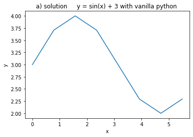
Show solution
[ ]:
# write here solution for a) y = sin(x) + 3 with vanilla python
# a) y = sin(x) + 3 with vanilla python
%matplotlib inline
import matplotlib.pyplot as plt
import math
xs = [x * (math.pi)/4 for x in range(8)]
ys = [math.sin(x) + 3 for x in xs]
plt.plot(xs, ys)
plt.title("a) solution y = sin(x) + 3 with vanilla python ")
plt.xlabel('x')
plt.ylabel('y')
plt.show()
[ ]:
#b.1) y = sin(x) + 3 with numpy, linspace
# write here
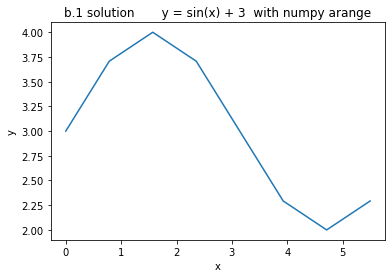
Show solution
[ ]:
#b.1) y = sin(x) + 3 with numpy, linspace
%matplotlib inline
import matplotlib.pyplot as plt
import numpy as np
# left end = 0 right end = 7/4 pi 8 points
# notice numpy.pi is exactly the same as vanilla math.pi
xs = np.arange(0, # included
8 * np.pi/4, # *not* included (we put 8, as we actually want 7 to be included)
np.pi/4 )
ys = np.sin(xs) + 3 # notice we know operate on arrays. All numpy functions can operate on them
plt.plot(xs, ys)
plt.title("b.1 solution y = sin(x) + 3 with numpy arange")
plt.xlabel('x')
plt.ylabel('y')
plt.show()
[ ]:
# b.2) y = sin(x) + 3 with numpy, linspace
# write here
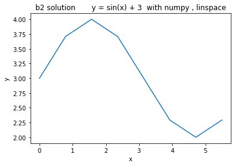
Show solution
[ ]:
# b.2) y = sin(x) + 3 with numpy, linspace
%matplotlib inline
import matplotlib.pyplot as plt
import numpy as np
# left end = 0 right end = 7/4 pi 8 points
# notice numpy.pi is exactly the same as vanilla math.pi
xs = np.linspace(0, (np.pi/4) * 7 , 8)
ys = np.sin(xs) + 3 # notice we know operate on arrays. All numpy functions can operate on them
plt.plot(xs, ys)
plt.title("b2 solution y = sin(x) + 3 with numpy , linspace")
plt.xlabel('x')
plt.ylabel('y')
plt.show()
[ ]:
# c) y = sin(x) + 3 with numpy and pi xlabels
# write here
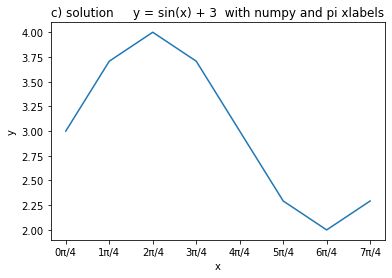
Show solution
[ ]:
# c) y = sin(x) + 3 with numpy and pi xlabels
%matplotlib inline
import matplotlib.pyplot as plt
import numpy as np
xs = np.linspace(0, (np.pi/4) * 7 , 8) # left end = 0 right end = 7/4 pi 8 points
ys = np.sin(xs) + 3 # notice we know operate on arrays. All numpy functions can operate on them
plt.plot(xs, ys)
plt.title("c) solution y = sin(x) + 3 with numpy and pi xlabels")
plt.xlabel('x')
plt.ylabel('y')
# FIRST NEEDS A SEQUENCE WITH THE POSITIONS, THEN A SEQUENCE OF SAME LENGTH WITH LABELS
plt.xticks(xs, ["%sπ/4" % x for x in range(8) ])
plt.show()
Bar plots#
First look at this this example, then proceed with the next exercises
[26]:
import numpy as np
import matplotlib.pyplot as plt
xs = [1,2,3,4]
ys = [7,5,8,2]
plt.bar(xs, ys,
0.5, # the width of the bars
color='green', # someone suggested the default blue color is depressing, so let's put green
align='center') # bars are centered on the xtick
plt.show()
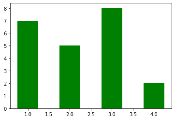
Exercise - goleadors#
✪✪ Display a bar plot of football players and their total goals in top-level football competitions, with their names sorted alphabetically
REMEMBER title and axis labels, make sure all texts are clearly visible
EXPECTED OUTPUT: 
[ ]:
import numpy as np
import matplotlib.pyplot as plt
players = {
"Cristiano Ronaldo" : 795,
"Pelé" : 765,
"Lionel Messi" : 755,
"Romário" : 753,
"Ferenc Puskás" : 729,
"Josef Bican": 720,
"Jimmy Jones": 647
}
#players={"Zlatan Ibrahimović": 566, "Alfredo Di Stéfano": 530}
# write here
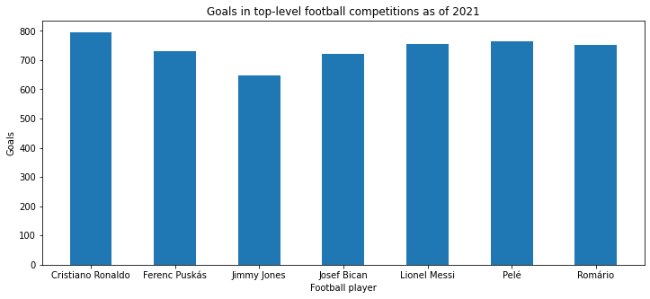
Show solution
[ ]:
import numpy as np
import matplotlib.pyplot as plt
players = {
"Cristiano Ronaldo" : 795,
"Pelé" : 765,
"Lionel Messi" : 755,
"Romário" : 753,
"Ferenc Puskás" : 729,
"Josef Bican": 720,
"Jimmy Jones": 647
}
#players={"Zlatan Ibrahimović": 566, "Alfredo Di Stéfano": 530}
fig = plt.figure(figsize=(12,5))
xs = np.arange(len(players))
xs_labels = sorted(players.keys())
ys = [players[n] for n in xs_labels ]
plt.bar(xs, ys, 0.5, align='center')
plt.title("Goals in top-level football competitions as of 2021")
plt.xticks(xs, xs_labels)
plt.xlabel('Football player')
plt.ylabel('Goals')
plt.savefig('expected-goleadors.png')
plt.show()
Exercise - chemical elements#
✪✪✪ Given multiple lists representig data about chemical elements, show a bar plot where elements are sorted alphabetically according to their name.
show elements as name (symbol)
REMEMBER title and axis labels, make sure all texts are clearly visible
HINT: This is more challenging, you need some sort trick - First read the Python documentation and then:
create a list of couples (list of tuples) where each tuple is the node identifier and the corresponding weight
sort the list by using the second value of the tuples as a key.
EXPECTED OUTPUT:
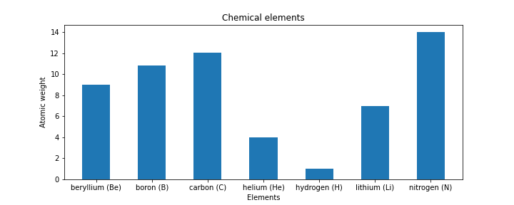
[ ]:
import numpy as np
import matplotlib.pyplot as plt
symbols = ['H', 'He', 'Li', 'Be', 'B', 'C', 'N']
names = ['hydrogen', 'helium', 'lithium', 'beryllium', 'boron', 'carbon', 'nitrogen']
atomic_weight = [1.008, 4.0026, 6.94, 9.0122, 10.81, 12.011, 14.007]
# write here
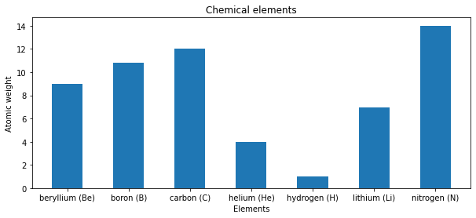
Show solution
[ ]:
import numpy as np
import matplotlib.pyplot as plt
symbols = ['H', 'He', 'Li', 'Be', 'B', 'C', 'N']
names = ['hydrogen', 'helium', 'lithium', 'beryllium', 'boron', 'carbon', 'nitrogen']
atomic_weight = [1.008, 4.0026, 6.94, 9.0122, 10.81, 12.011, 14.007]
fig = plt.figure(figsize=(10,4))
xs = np.arange(len(symbols))
coords = [ (names[i] + " " + "(" + symbols[i] + ")", atomic_weight[i]) for i in range(len(symbols)) ]
coords.sort(key=lambda c: c[0])
ys = [c[1] for c in coords]
plt.bar(xs, ys, 0.5, align='center')
plt.title("Chemical elements")
plt.xticks(xs, [c[0] for c in coords])
plt.xlabel('Elements')
plt.ylabel('Atomic weight')
plt.savefig('expected-chemical-elements.png')
plt.show()
Exercise - superheroes#
✪✪✪✪ Each year a contest between the super-heroes of two crime-ridden cities is held. The superheroes perform several challenges and each city receives a score. At the end, the mayor of each city wants to see how its city compared against the other city. The mayor wants you to show the performances in sorted order with respect to the mayor’s city, while showing also the performance of the other city for comparison.
Look at this example, and make a double bar chart
specify the city in the title
remember x and y axis labels
EXPECTED OUTPUT (here the performances of Gotham City are shown in sorted order):
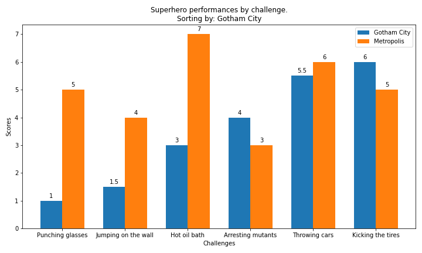
[ ]:
import matplotlib.pyplot as plt
import numpy as np
d = {
'Punching glasses' : (1, 5),
'Kicking the tires' : (6, 5),
'Throwing cars' : (5.5,6),
'Hot oil bath' : (3, 7),
'Jumping on the wall': (1.5,4),
'Arresting mutants' : (4, 3),
}
city = 'Gotham City'
cities = ['Gotham City', 'Metropolis']
#city= 'Sin City'
#cities = ['District X', 'Sin City']
# write here
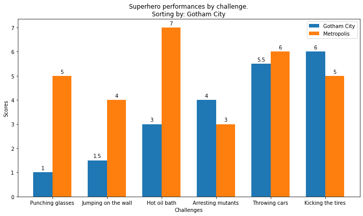
Show solution
[ ]:
import matplotlib.pyplot as plt
import numpy as np
d = {
'Punching glasses' : (1, 5),
'Kicking the tires' : (6, 5),
'Throwing cars' : (5.5,6),
'Hot oil bath' : (3, 7),
'Jumping on the wall': (1.5,4),
'Arresting mutants' : (4, 3),
}
city = 'Gotham City'
cities = ['Gotham City', 'Metropolis']
#city= 'Sin City'
#cities = ['District X', 'Sin City']
ind = cities.index(city)
labels = sorted(d.keys(), key=lambda k: d[k][ind])
perf1 = [d[k][0] for k in labels]
perf2 = [d[k][1] for k in labels]
x = np.arange(len(labels)) # the label locations
width = 0.35 # the width of the bars
fig, ax = plt.subplots( figsize=(10,6))
rects1 = ax.bar(x - width/2, perf1, width, label=cities[0])
rects2 = ax.bar(x + width/2, perf2, width, label=cities[1])
# Add some text for labels, title and custom x-axis tick labels, etc.
ax.set_ylabel('Scores')
ax.set_xlabel('Challenges')
ax.set_title('Superhero performances by challenge.\nSorting by: ' + city)
ax.set_xticks(x)
ax.set_xticklabels(labels)
ax.legend()
ax.bar_label(rects1, padding=3)
ax.bar_label(rects2, padding=3)
fig.tight_layout()
plt.savefig('expected-superhero-perf.png')
plt.show()
Showing plots side by side#
You can display plots on a grid. Each cell in the grid is identified by only one number. For example, for a grid of two rows and three columns, you would have cells indexed like this:
1 2 3
4 5 6
REMEMBER: plt.figure and plt.show should be called only ONCE in the whole program !
[30]:
%matplotlib inline
import matplotlib.pyplot as plt
import math
xs = [1,2,3,4,5,6]
# cells:
# 1 2 3
# 4 5 6
plt.subplot(2, # 2 rows
3, # 3 columns
1) # plotting in first cell
ys1 = [x**3 for x in xs]
plt.plot(xs, ys1)
plt.title('first cell')
plt.subplot(2, # 2 rows
3, # 3 columns
2) # plotting in second cell
ys2 = [2*x + 1 for x in xs]
plt.plot(xs,ys2)
plt.title('2nd cell')
plt.subplot(2, # 2 rows
3, # 3 columns
3) # plotting in third cell
ys3 = [-2*x + 1 for x in xs]
plt.plot(xs,ys3)
plt.title('3rd cell')
plt.subplot(2, # 2 rows
3, # 3 columns
4) # plotting in fourth cell
ys4 = [-2*x**2 for x in xs]
plt.plot(xs,ys4)
plt.title('4th cell')
plt.subplot(2, # 2 rows
3, # 3 columns
5) # plotting in fifth cell
ys5 = [math.sin(x) for x in xs]
plt.plot(xs,ys5)
plt.title('5th cell')
plt.subplot(2, # 2 rows
3, # 3 columns
6) # plotting in sixth cell
ys6 = [-math.cos(x) for x in xs]
plt.plot(xs,ys6)
plt.title('6th cell')
plt.subplots_adjust(wspace = 0.5, hspace = 1) # to avoid text overlapping
plt.show() # ONLY call this ONCE at the very end
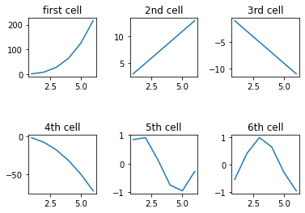
Exercise - sin(kx)#
Given a list ks containing \(n\) floats, show \(n\) plots stacked vertically of function \(sin(k x)\) with limits left to right subdivided in 50 intervals.
display the
kvalues as titlesdefine a function
plot_sinto be called \(n\) timesput adequate vertical space
HINT: use numpy vector operations
REMEMBER
plt.figureandplt.showmust be called only ONCE in the whole program !
[ ]:
import matplotlib.pyplot as plt
import math
ks = [1,2,3]
# write here
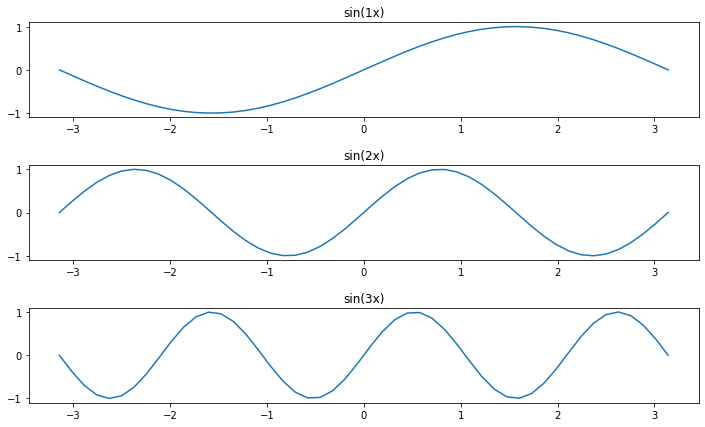
Show solution
[ ]:
import matplotlib.pyplot as plt
import math
ks = [1,2,3]
def plot_sin(left, right, k, i):
xs = np.linspace(left, right,50)
plt.subplot(len(ks), # rows
1, # columns
i+1) # cell number
ys = np.sin(k * xs)
plt.plot(xs, ys)
plt.title("sin(%sx)" % k)
fig = plt.figure(figsize=(12,7))
for i in range(len(ks)):
plot_sin(-np.pi,np.pi, ks[i], i)
plt.subplots_adjust(wspace = 0.5, hspace = 0.5) # to avoid text overlapping
plt.show()
Other plots#
Matplotlib allows to display pretty much anything, here we collect some we use in the book, for others, see the extensive Matplotlib documentation
Pie chart#
[32]:
%matplotlib inline
import matplotlib.pyplot as plt
labels = ['Oranges', 'Apples', 'Cocumbers']
fracs = [14, 23, 5] # how much for each sector, note doesn't need to add up to 100
plt.pie(fracs, labels=labels, autopct='%1.1f%%', shadow=True)
plt.title("Super strict vegan diet (good luck)")
plt.show()
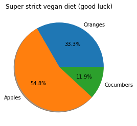
Fancy plots#
You can enhance your plots with some eyecandy, we put some example.
Background color#
[33]:
# CHANGES THE BACKGROUND COLOR FOR *ALL* SUBSEQUENT PLOTS
plt.rcParams['axes.facecolor'] = 'azure'
plt.plot([1,2,3],[4,5,6])
plt.show()
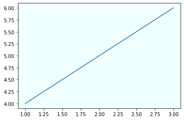
[34]:
plt.rcParams['axes.facecolor'] = 'white' # restores the white for all following plots
plt.plot([1,2,3],[4,5,6])
plt.show()
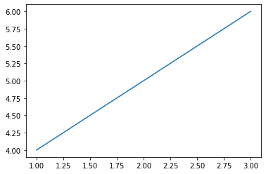
Text#
[35]:
plt.xlim(0,450) # important to set when you add text
plt.ylim(0,600) # as matplotlib doesn't automatically resize to show them
plt.text(250,
450,
"Hello !",
fontsize=40,
fontweight='bold',
color="lightgreen",
ha='center', # centers text horizontally
va='center') # centers text vertically
plt.show()
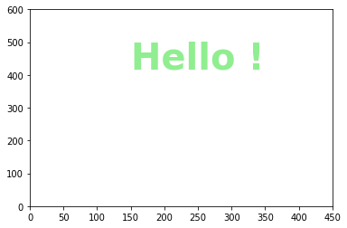
Images#
Let’s try adding the image clef.png

[ ]:
%matplotlib inline
import matplotlib.pyplot as plt
fig = plt.figure(figsize=(7,7))
# NOTE: if you don't see anything, check position and/or zoom factor
from matplotlib.offsetbox import OffsetImage, AnnotationBbox
plt.xlim(0,150) # important to set when you add images
plt.ylim(0,200) # as matplotlib doesn't automatically resize to show them
ax=fig.gca()
img = plt.imread('images/clef.png')
ax.add_artist(AnnotationBbox(OffsetImage(img, zoom=0.5),
(50, 100),
frameon=False))
plt.show()
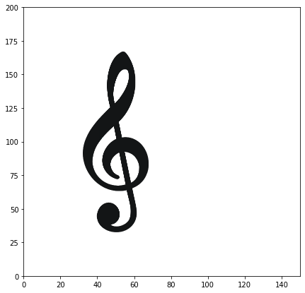
Color intensity#
To tweak the color intensity we can use the alpha parameter, which varies from 0.0 to 1.0
[37]:
plt.plot([150,175], [25,400],
color='green',
alpha=1.0, # full color
linewidth=10)
plt.plot([100,125],[25,400],
color='green',
alpha=0.3, # lighter
linewidth=10)
plt.plot([50,75], [25,400],
color='green',
alpha=0.1, # almost invisible
linewidth=10)
plt.show()
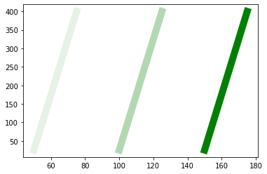
Exercise - Be fancy#
Try writing some code to visualize the image down here
EXPECTED OUTPUT
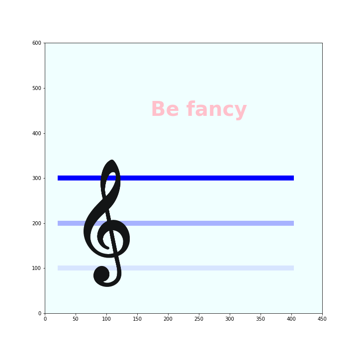
[ ]:
%matplotlib inline
import matplotlib.pyplot as plt
# write here
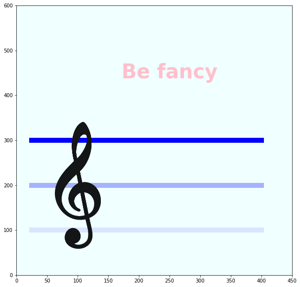
Show solution
[ ]:
%matplotlib inline
import matplotlib.pyplot as plt
fig = plt.figure(figsize=(10,10))
# CHANGES BACKGROUND COLOR
plt.rcParams['axes.facecolor'] = 'azure'
# SHOWS TEXT
plt.text(250,
450,
"Be fancy",
fontsize=40,
fontweight='bold',
color="pink",
ha='center',
va='center')
# CHANGES COLOR INTENSITY WITH alpha
plt.plot([25,400], [300,300],
color='blue',
alpha=1.0, # full color
linewidth=10)
plt.plot([25,400], [200,200],
color='blue',
alpha=0.3, # softer
linewidth=10)
plt.plot([25,400], [100,100],
color='blue',
alpha=0.1, # almost invisible
linewidth=10)
# NOTE: if you don't see anything, check position and/or zoom factor
from matplotlib.offsetbox import OffsetImage, AnnotationBbox
plt.xlim(0,450) # important to set when you add images
plt.ylim(0,600) # as matplotlib doesn't automatically resize to show them
ax=fig.gca()
img = plt.imread('images/clef.png')
ax.add_artist(AnnotationBbox(OffsetImage(img, zoom=0.5),
(100, 200),
frameon=False))
plt.savefig('expected-fancy-plot.png')
plt.show()
Continue#
Go on with Matplotlib - Numpy images